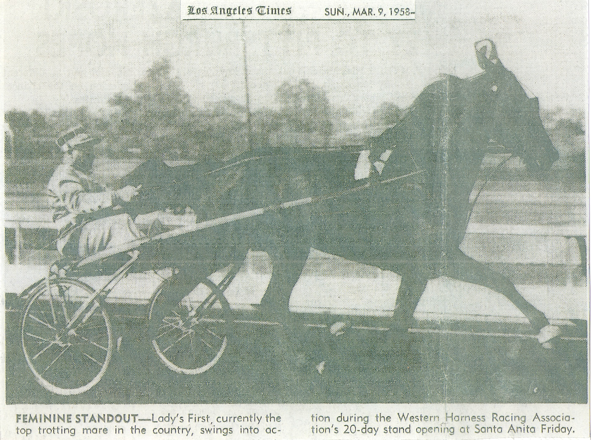
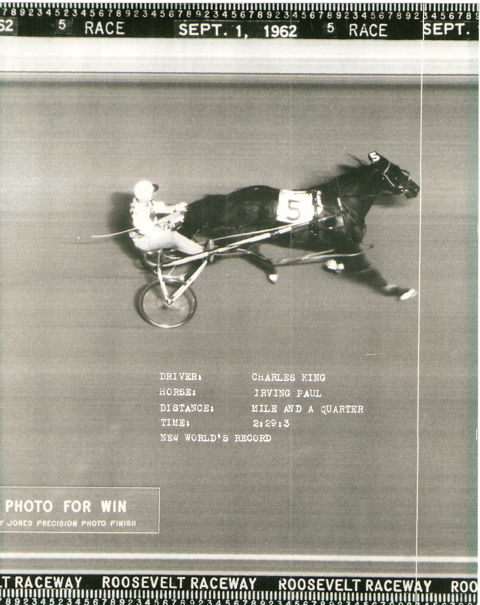
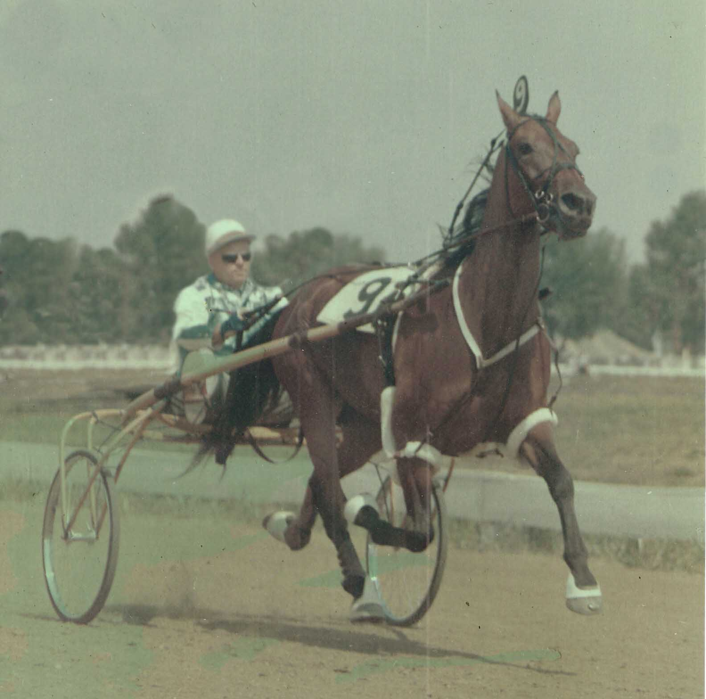
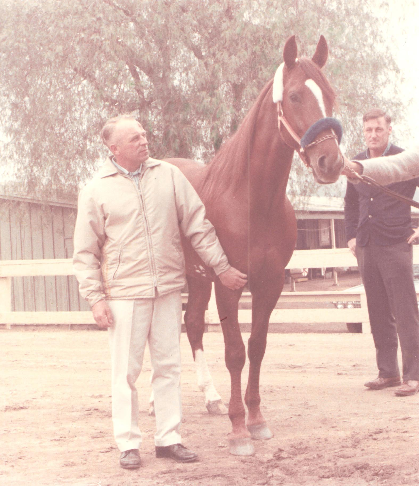
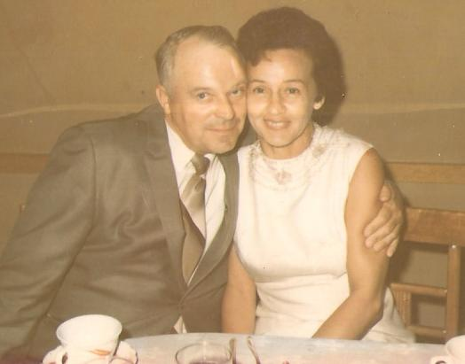
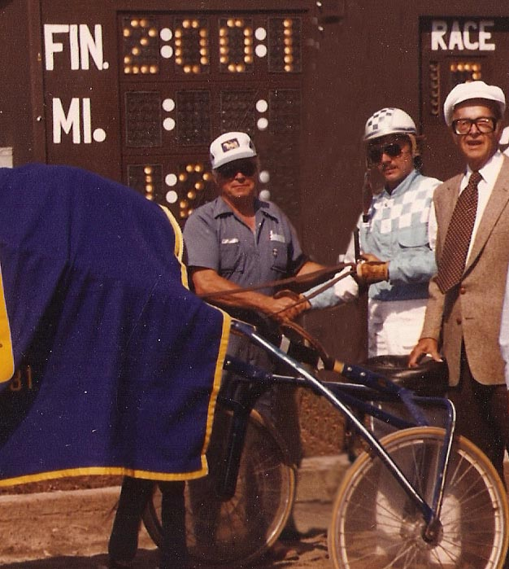

Early Life & The Road to Horses

Charley King — High School
Charley King was one of the top harness horsemen of the 1950s and 60s. He was born Charles Lafayette King IV on April 2, 1922 in Rock Castle County, Kentucky, and later moved with his family to Hamilton, Ohio as a child. From an early age he loved horses, and taught himself to train his pony to do tricks by watching old western movies.
When he was 18, Charley was involved in a farming accident and suffered a severe head injury. He was in a coma for 29 days and not expected to live — but he survived, and graduated from high school in 1941. His injuries prevented him from entering the service during World War II, and during the war years he drove a truck.
After the war, Charley and his two brothers, Buck and Eli, started a small trucking company called King Brothers Trucking, and later an International Harvester truck dealership. It was through business that he would find the love of his life — while calling on the International Harvester Corporation, Charley met his wife Bettie, who worked the switchboard there in Cincinnati.
The Ohio Valley Stables & A Career in Racing
{kind=link}

Charley with Ladies First
Charley married Bettie in 1955 and followed his passion for training and racing harness horses. He started out in partnership with his high school classmate, Howard Beissinger, with a mare named Ladies First, who went on to become one of the top trotting horses of the 1950s.
In partnership with Abe Wilsker, Charley and Bettie built the Ohio Valley Stables into one of the most powerful standardbred horse stables of the 1960s, with horses like Irvin Paul, Adios Marches, Argo Kid, and many others.
{kind=link}

Charley with Irvin Paul
Irvin Paul held three world records at one time and was the seventh harness horse in history to surpass the half million dollar earnings mark. At the end of his career, he was the sixth top money-winning pacer in the world.
Charley later teamed up with his business partner George Dunigan and created the Bobby Ken Stables — a name taken from each of their youngest sons.

Charley King and Irvin Paul · Santa Anita, 1962
{kind=link}

Charley King with Argo Kid · 1965
{kind=link}

Charley King and Adios Marches · 1966
Annette Sue & The 1958 Season

Charley King with Annette Sue · 1958
By 1958, Charley's stable boasted two of the world's top free-for-all trotters — Ladies First and the newly purchased Annette Sue. Annette Sue won a record-setting 16 straight races and, like her stablemate, was one of the top earning trotters of her day. Together the two mares won a combined lifetime total of over $300,000 — equivalent to more than $2 million today.
Crawfordville & Retirement

Charley and George Dunigan with Argo Time, foal of Ladies First · 1971
Charley and Bettie moved to the Sharon Farm Stables of Crawfordville, Georgia in the late 1960s in an attempt to create a breeding farm. After a string of hard luck in the 1970s, Charley and Bettie retired from the horse business.
{kind=link}

Charley & Bettie King
They lived their lives out among the people they loved in Crawfordville, Georgia. They had three sons and four grandchildren. They were married for almost 45 years until Charley passed away in 1999. Bettie passed in April, 2011.
{kind=link}

Syracuse, NY · 1981
Charley pictured with one of the last horses he trained, driven by his son Charley King Jr. The horse was owned by Joe King (pictured far right) — inventor of the modern-day sulky, a rocket scientist who had a hand in the Apollo missions.
On the Track — Race Footage
Charley's racing career was captured on film at some of the era's great tracks. These recordings, announced by Hall of Fame announcer Roy Shudt, preserve the sound and sight of the Ohio Valley Stables in their prime.
Race footage featuring the Ohio Valley Stables
For the full collection of race recordings, visit the Recordings page.